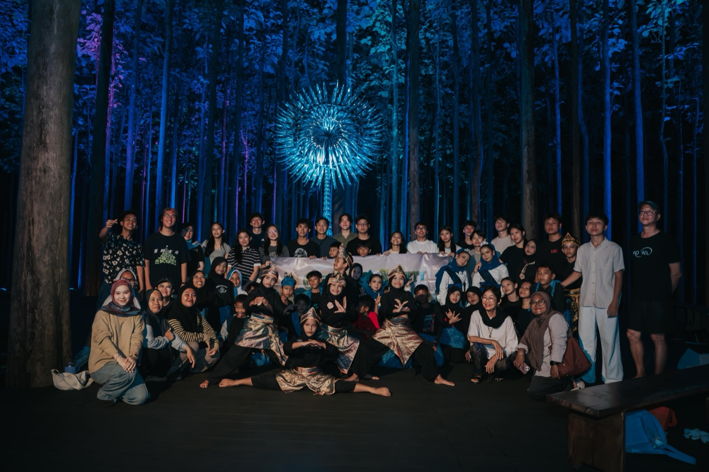

What we do
Run field research, eco-education campaigns and community projects that put sustainability into the hands of young people.

About Greenpact
Who we are, what we do and why we keep showing up for our common home.
Who we are

Greenpact began with a simple conviction: caring for our common home is not a slogan, it is a practice. We are students, researchers and creators working at the intersection of ecology, innovation and community.
Run field research, eco-education campaigns and community projects that put sustainability into the hands of young people.
Evidence first. Every campaign starts with observation and ends with impact we can measure and share openly.
Inspired by Laudato Si', we believe the next generation should not just inherit the planet. They should help heal it.
Our compass
A generation that treats the Earth as a shared home, where every young person has the tools, knowledge and courage to protect it.
Educate communities on sustainability through accessible, science-backed programs.
Empower youth to lead environmental research and innovation projects.
Build partnerships that scale local action into lasting regional impact.
Champion the spirit of Laudato Si': care for creation and for one another.
GreenFacts
Hover a card to flip it. Tap on mobile.